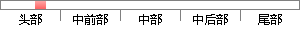

其中图像软件处理工具Photoshop是目前公认的，较好的通用平面美术设计软件，它功能完善，性能稳定，使用方便。
降重后句子
photoshop是图像软件处理工具，目前被公认为是一种较好的通用图形艺术设计软件。功能完善，性能稳定，使用方便。
片段位置图

相似结果|
相似片段 1：创作进入一个新的阶段，各种图像处理软件也越来越完善，普及程度不断的提高。其中的图像软件处理工具Photoshop是目前公认的、较好的通用平面美美术设计软软件，它功能完善，性能稳定，使用方便
相似片段 2：Photosh叩是目前公认的最好的通用平面美术设计软件，它的功能完善，性能稳定，使用方便，所以在几乎所有的广告、出版、软件公司，Photoshop都是首选的平面工具。Photoshop是专门用来进行图像
相似片段 3：的最好的通用平面美术设计软件，它的功能完善，性能稳定，使用方便，所以在几乎所有的广告、出版、软件公司，Photosl帅都是首选的平面工具。Photoshop是专门用来进行图像处理的软件。通过它可以对图像
|
※ 片段修改建议 ※
近似词参考：- 图像：图象
- 处理：处置 处置惩罚
- 工具：东西 对象
- 目前：今朝 现在
- 功能：功效
- 完善：完美 美满
- 性能：机能
- 稳定：不变 不乱 稳固
系统自动生成语句：photoshop是图象软件处置东西，今朝被公认为是一种较好的通用图形艺术设计软件。功效完美，机能不变，使用方便。
注：本片段修改建议为系统自动生成，仅供参考。